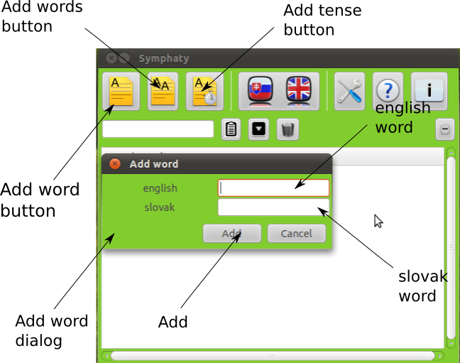

Advanced
In this section we will say something about advanced featuers:
Adding of one word
If we want to add some word which is not in database we should click on button
which is marked on below image as Adding of word. We will see Add word dialog.
To field which is marked on image as English word we write english word and to
field marked as Slovak word we write it's slovak meaning. Than we push Add button.
We will se dialog which announce if word was added/not added.

Adding of multiple words from file
If we want to add more english words or more meanings to english word we
should take this steps: Create new text file. To the text file write words
like this:
english word1:slovak1:slovak2
english word2:slovak4:slovak5
, then save file. After this push button which is marked on image as Add words button. New dialog opens in which we choose file that we created already and push the button Open. Dictionary will start adding words, informs us about progress.
english word1:slovak1:slovak2
english word2:slovak4:slovak5
, then save file. After this push button which is marked on image as Add words button. New dialog opens in which we choose file that we created already and push the button Open. Dictionary will start adding words, informs us about progress.
Adding of tense
Beside adding meaning of word we can also add tense to word. We push button
Adding of tense. It will open dialog which contains field for present, past
and particple. We fill in these fields and push button Add.